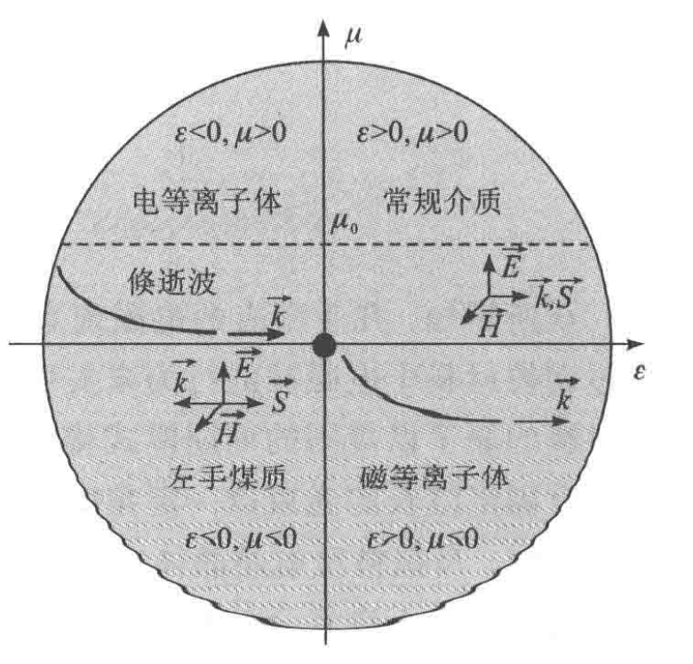

几乎所有电磁现象都可以归因于电磁波与材料间的相互作用，因此可以通过调控材料中电磁波的行为来实现电磁功能.
天然材料由许多原子或分子组成，晶体材料的原子以规则的周期模式排列，而非晶体材料的原则则是以随机方式排列组成的.
具有固定波长的光束以一定的角度照射晶体时，相长干涉导致反射光增强.
布拉格反射是晶体中X射线衍射的基础.
类似于天然材料，三维超材料的电磁特性可以通过等效媒质参数，即等效介电常数\(\epsilon\)与磁导率\(\mu\)（或折射率\(n\)与阻抗\(\eta\)）来表征.
包括天然材料与超材料在内的所有材料均可以根据材料参数域中的等效介电常数与磁导率进行分类.

单负（\(\epsilon\)、\(\mu\)其中之一小于0）材料参数会导致倏逝波的产生.
双负材料参数会产生后向波、负折射等物理现象.
\(\mu=0\)，\(\epsilon=0\)的材料可以实现完美的隧穿效应.
根据左手法则，LHM中电磁波的相速度与群速度相反，从而导致在LHM中传播的电磁波相位是超前的，即产生后向波效应.
群速度方向（能量流动方向）不变，相速度方向（波的传播方向）相反.
[注]后向波的概念在机械波邻域很早就被提出了.
当平面波照射到LHM与天然材料的交界面时，会发生负折射现象，这是由于同时为负的介电常数与磁导率会导致媒质的折射率小于0.
从数学角度来看：
$$\epsilon_r = |\epsilon_r|\cdot e^{i\theta_\epsilon}$$ $$\mu_r = |\mu_r|\cdot e^{i\theta_\mu}$$ $$\theta_\epsilon, \theta_\mu \approx \pi$$ $$n = \sqrt{\epsilon_r \mu_r} = \sqrt{|\epsilon_r||\mu_r|}e^{i\pi} = -\sqrt{|\epsilon_r||\mu_r|}$$LHM还具有逆多普勒效应、逆切伦科夫辐射等电磁特性.
超材料是人造复合结构材料，其电磁特性超越了天然材料所具有的电磁特性.
不同于天然材料，超材料通常由周期性或非周期性排列的亚波长“人造原子”组成.
用于描述长度，指远小于工作波长的长度，超表面是用于调控入射光的，所以通常情况下工作波长就是入射光的波长.
通过对人造原子的设计与排列，所得到的超材料在理论上可以在材料参数域中实现任意的材料性质，包括现有材料无法实现的新的物理上可实现的性质，如负介电常数、磁导率、零折射率等.
[注]这里疑似为“负磁导率”而非“磁导率”.
通过将一组人造原子按照一定的排列方式组成的二维平面结构.
等离激元超表面：使用金属纳米结构.
全介质超表面：完全不使用金属，只采用高折射率的介质材料.
与三维超材料相比，超表面由于具有亚波长厚度，其剖面低且损耗小.
类似于三维超材料，超表面可以视为具有等效材料参数的均匀薄板.
考虑其电厚度很小，为了简化可以将其近似视为零厚度的表面.
这种情况下，电磁波于超表面间的相互作用可以通过边界条件加以建模.
表面的边界条件为：
$$\begin{cases} Z\boldsymbol{J} = \hat{n}\times \boldsymbol{E}_{av} \\ Y\boldsymbol{K} = \hat{n}\times \boldsymbol{H}_{av} \end{cases}$$单位：欧姆（\(\Omega\)）
此概念来源于电磁学中的传输线理论.
电阻描述的是电磁能量的纯消耗（不可逆地变成热能）.
阻抗描述的是电磁能量的综合行为（既包含变成热的“消耗”，又包含引起相位改变的“动态储存”）.
设薄板厚度为\(d\)，相应的波数为\(k\).
\(\boldsymbol{E}_{av}\)和\(\boldsymbol{H}_{av}\)可以用薄板两侧的电场与磁场切向分量近似表示为：
$$\begin{cases} \boldsymbol{E}_{av} \approx \frac{\boldsymbol{E}_t^+ + \boldsymbol{E}_t^-}{kd}\tan\left(\frac{kd}{2}\right)\\ \boldsymbol{H}_{av} \approx \frac{\boldsymbol{H}_t^+ + \boldsymbol{H}_t^-}{kd}\tan\left(\frac{kd}{2}\right) \end{cases}$$其中上标“+”与“-”分别表示薄板的上侧与下侧.
\(kd\rightarrow 0\)时，上式可化简为：
$$\begin{cases} \boldsymbol{E}_{av} \approx \frac{\boldsymbol{E}_t^+ + \boldsymbol{E}_t^-}{2}\\ \boldsymbol{H}_{av} \approx \frac{\boldsymbol{H}_t^+ + \boldsymbol{H}_t^-}{2} \end{cases}$$